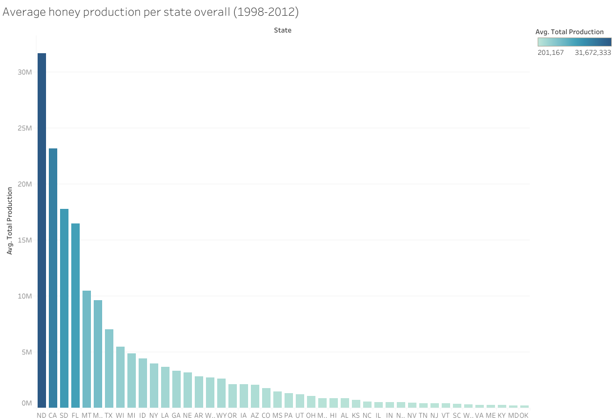
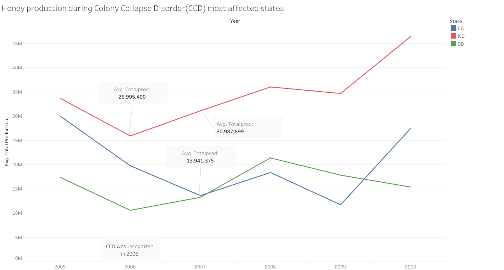
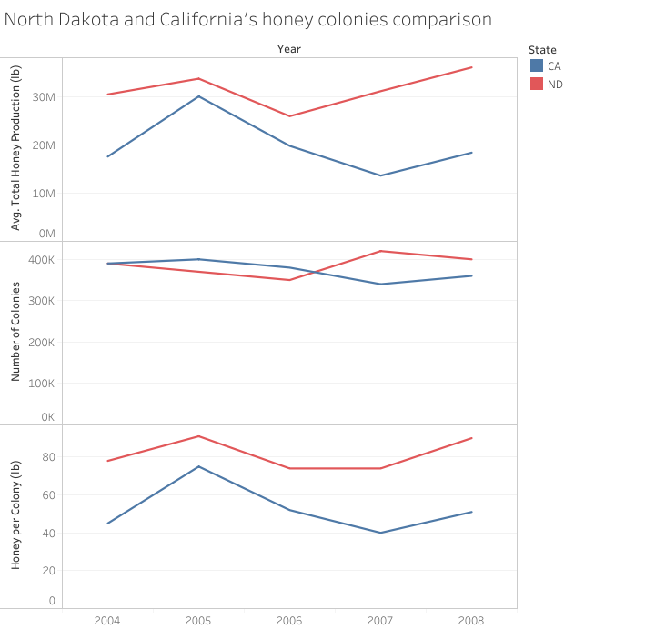
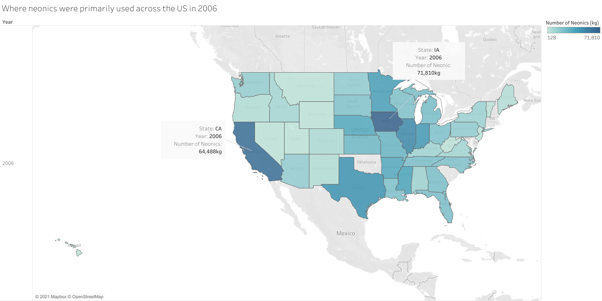
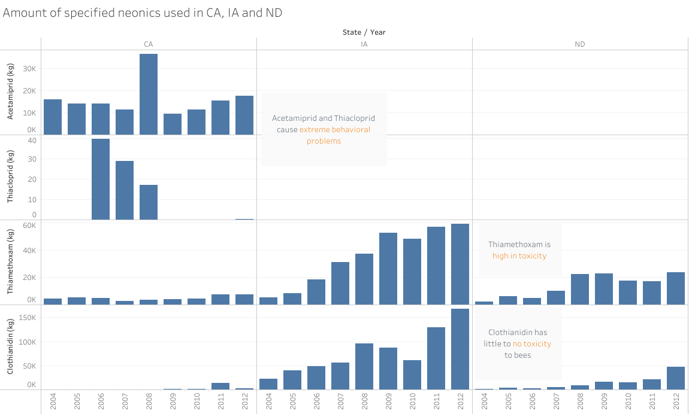
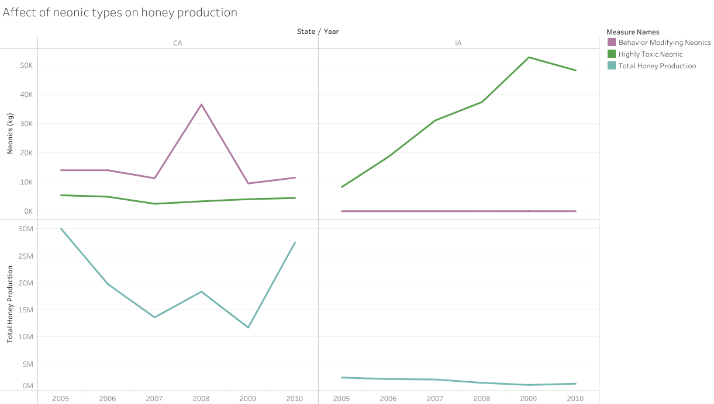
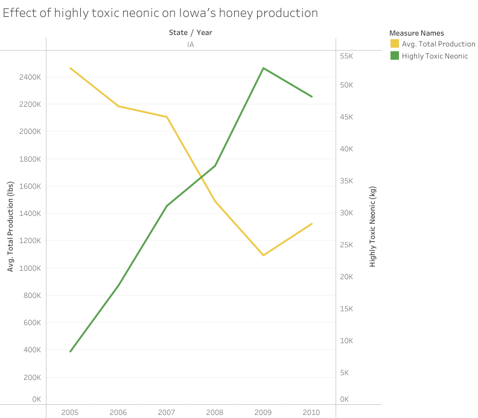
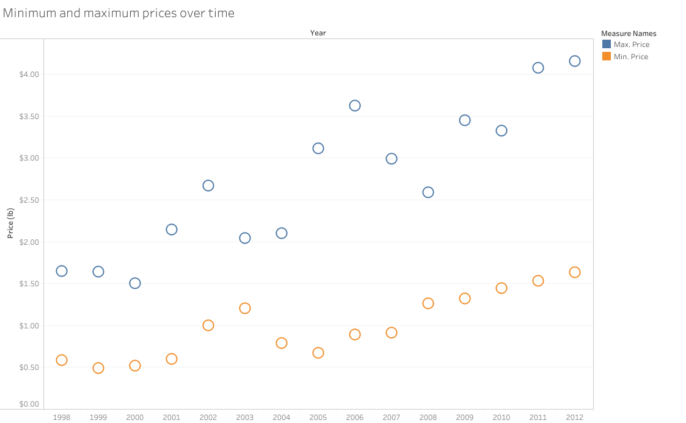
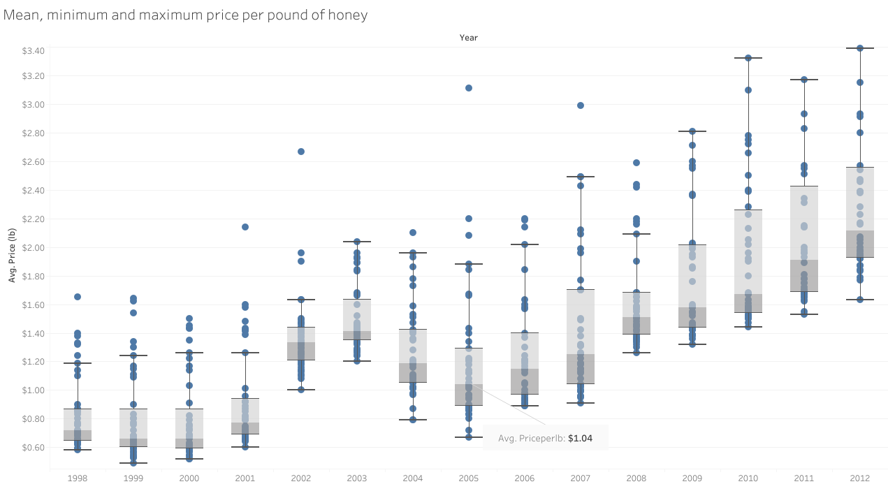
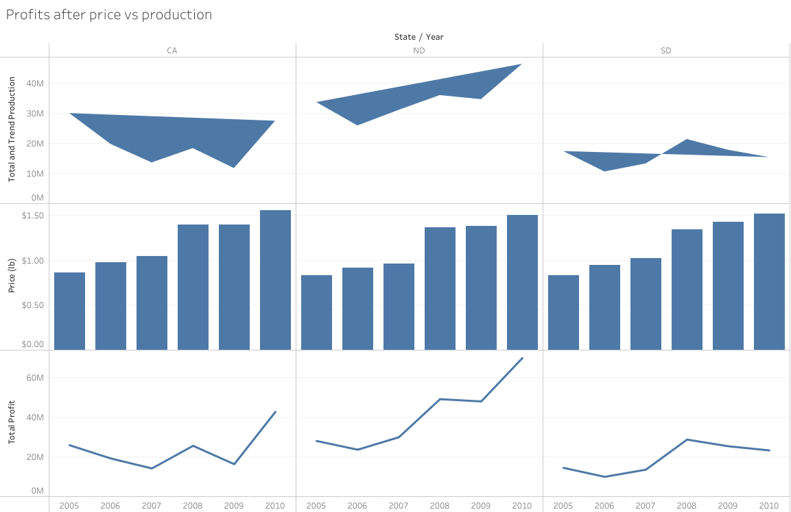

I first decided to look at the states that produced the most and least amount of honey on average over the course of the data. I thought this would be an easy place to start understanding the data I had chosen. I found North Dakota, California, and South Dakota to be the top three honey producing states while Kentucky, Maryland, and Oklahoma were the lowest three states. I was very interested in finding just how much more North Dakota produced over California which was about 8 million pounds of honey over several years.
Assignment 2: Exploratory Data Analysis
Evarista Veliz
Dataset
This data contains information regarding honey production within the unitied states for the years between 1998 - 2012. It was collected by the
National Agricultural Statistics Service for the United States Department of Agriculture. The second dataset contains the same data as the first
with added data by the United States Geological Survey (USGS) regarding the neonics being used within the states. Neonics, or Neonicotinoids, are insecticides
that are used on farm and urban landscapes and, when present in plants, can be collected by bees through pollenation and become toxic.
Toxicity affects include: slower learning, flight and navigation issues, and reduced taste sensitivity; the consequences can become
detrimental to a colony.
Clothianidin: Seed-treatment. No negative impact on honeybee colonies. Use began in early 2000's.
Thiacloprid: Low toxicity, but can affect behaviors such as navigation, communication, and foraging.
Thiamethoxam: Developed in the early 2000's for potato beetles, mealybugs and more. Is highly toxic to bees.
Imidacloprid: Mimics nicotine. Targets sucking insects, termites, some soil insects and fleas. Is toxic to bees. Begain use in late 1990's.
Acetamiprid: Found to affect the memory and learning genes, the proboscis extension response and homing success of honeybees. Developed in the 1980's.
After convincing my roommate not to start a bee colony in the backyard I decided to look up any datasets on Kaggle regarding honey bees to see what I could find. This Dataset
looked the most promising in terms of its variables. After looking into it a little the Colony Collapse Disorder event came to mind and I remembered hearing about it when I was
younger, but it also felt like the event just "went away". I then became interested in finding
any information about the impact, if any, it had on honey production.
Colony Collapse Disorder is a strange phenomenon where honey bees would disappear and abandon a colony, leaving behind the queen bee and younger bees with lots of food available. It was
first reported in 2006 and still continues today, while the cause is still unknown there are theories regarding certain neonics and beekepping practices being contributing factors.
The data is available online at:
DATASET-URL-HERE
DATASET2-URL-HERE
Initial Analysis Questions
- What states produced the most and the least honey overall?
- How did honey production change around the time of Colony Collapse Disorder (CCD)?
- How did prices change overtime?
- Where were neonics primarily used in 2006?
- Does the data show any possible caueses of CCD?
Discoveries & Insights


I then wanted to focus on the production of honey in these top states as Colony Collapse Disorder was occuring. As the phenominon was recognized in 2006 I limited my data to revolve around that period of time. The image shows a drop in production across the top three states, however in 2007 North Dakota had a 5 million pound increase while California continued to decline. This peaked my interest as California never seemed to fully recover until 2010 while North and South Dakota recovered in 1-2 years.

Since, North Dakota had the highest honey production over California I wanted to compare the colonies and their honey production to find any information that stood out. In this image we see that the amount of honey produced per colony in North Dakota is significantly higher than that of California. However, both California and North Dakota seem to have similar numbers in the amount of colonies in those states. What is also interesting is that in 2005, the number of colonies decrease in North Dakota, but the honey produced increased over 10 pounds. My goal was to try and find any answers to why this might have happened.

I found another data set that shows the use of neonics(insecticides) across the country so I was curious about finding any relations with the use of neonics and production. The above image describes the states amount of neonics used during the year of 2006, when CCD began to be reported. The data shows that the midwestern and southern states primarily used more neonics than the western states. However, California is the outlier to this being the second state with the most neonics used in 2006. Iowa stood out to having the most amount of neonics used above California, but, had shown no significant numbers to honey production in my previous findings.

Originally, I was hoping to show the specific amounts of each neonic being used. Since, Iowa had shown to have the most amount used in the previous image I expected to see all neonics being used, instead I found only a couple were used. This image shows that the neonics that are known to cause behavioral issues that are associated with CCD were used in California, but were not used in North Dakota nor Iowa. This information made me wonder if those specific neonic could have been a major contributor to CCD since we saw earlier that North Dakota's honey production increased after 2006, while Californias production continued to decline.

I wanted to try and find a correlation between the neonics used and how the honey production was affected (if at all). When comparing California and Iowa, I found that the more of the highly toxic neonic used with less of the behavioral neonics resulted in a steadier decline of honey production while California's production varied more rapidly with more of the behavioral neonics used.

This image shows the dramatic increase in use of Thiamethoxam in Iowa over time, which is the neonic that is highly toxic to honeybees. As the amount used per year increases the average total honey production in the state decreases. This may have been a contributing factor to the change in honey production for that state.

I wanted to look at the price of honey and how its changed over the years so I looked at the minimum and maximum prices per pound. I noticed the data before 2003 and after 2009, moved up and down together almost in synchrony. Between the year 2004-2008 the prices begin to move away from each other showing that something was impacting the price in only some states. This area in particular stood out to me to look into further.

I decided to dig deeper into the prices per state by creating a box-and-whisker plot per year and found that Nevada was the outlier in this data. I was very surprised to see how much more Nevada was selling its honey for. In 2005, the average price across the US was $1.04, but Nevada's average was $3.11 with a 200% markup value. Based on the previous image I was expecting to see an average of $2.00, but did not realize how a single outlier could skew ones perception of data.

I wanted to show price and production and how the decisions made by the states affected the states profit on honey. To do this I compared the productivity and price to analyze the states profits to determine which factor was the larger contributer to profits. I found that North Dakota performed the best in profit increase from 2005 to 2010 because their production increased overall as shown from the overall increase of production in 2005 and 2010, however South Dakota had more stability in profits over the five year period. California increased their profits by increasing their price per pound even though they had reduced honey production.
Summary
I had some interesting finds in this dataset and was able to thoroughly use Tableau to show my visualizations. I was able to dig through the data and variables to discover some insights about honey production and types of neonics(insecticides) being used. It was discoverd that North Dakota out ranks California in its honey production and actually has a higher amount of honey produced per honey bee colony. It has also been shown that the CCD phenomenon had impacted California more than North Dakota. California's use of neonics are mainly the types that have been found to affect a bees behavioral tendencies regarding its ability to navigate home, reflexes, flight, and memory. I believe that this has been a major contributing factor to its decline in honey production overtime, while a state like North Dakota, that does not use these types, had showed minor decreases in honey production.